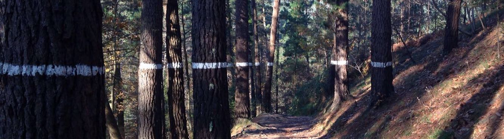

Black holes and Gravitational Waves @ NBI
** If you are interested in attending this course, please fill
in this
form**
Lecturers: Jose Maria Ezquiaga, Maarten van de Meent
Placement: Block 4
Timetable: Lectures: Tuesdays 10-12 & Thursdays 13-15. Exercises: Thursdays 15-17
Location: Aud. D
Credits: 7.5 ECTS
Evaluation: exercises + research project
Course description:
Black holes are among the most unique objects in the Universe from a theoretical and observational perspective. Their study promises to deepen our understanding about gravity, its connection with other fundamental forces and its role in the formation and evolution of the cosmos.
Black holes are nowadays also a central piece of the astronomical program from the imaging of the Event Horizon Telescope to the gravitational waves detected by LIGO, Virgo and KAGRA.
In this course we will explore the fundamentals of black hole theory and their observational evidence.
We will then focus on gravitational wave radiation from the coalescence of compact binaries.
The goal of the course is to set the stage for students to understand the basis and open questions of black hole theory and gravitational wave observations.
This course is designed for master and graduate students.
Previous knowledge of General Relativity, for example attending the General Relativity and Cosmology course in Block 3, is a prerequisite.
Along the course students will follow in person lectures, read additional materials, work on exercise assignments and develop a final project.
Syllabus:
- What is a black hole?
- Schwarzschild metric
- Penrose diagrams
- What is a black hole?
- Kerr metric
- Geodesics around Kerr
- Black hole shadows
- Black hole perturbations
- Ringing a black hole and other fun stuff
- Scattering waves with Kerr
- Superradiance
- Quasi normal modes
- Laws of black hole mechanics
- Black holes in our universe: how they form, how we find them
- Gravitational collapse
- White dwarfs, neutron stars and Chandrasekhar Limit
- Evidence for BHs: astrometry, lensing, imaging
- When black holes meet each other
- Gravitational wave generation: quadrupole formula
- Inspiral of compact binaries
- Full waveforms: inspiral, merger, ringdown
- Gravitational waves across the cosmos
- Wave propagation in general relativity
- Cosmological propagation
- Lensing by cosmological inhomogeneities
- The new era of gravitational wave astronomy
- Current GW observatories
- Data analysis: match-filtering and Bayesian statistics
- Future frontiers
References:
Student resources
Past Teaching
Main instructor
Invited lectures
Teaching assistant